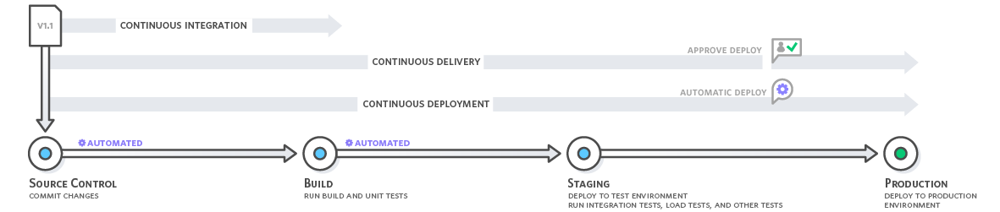
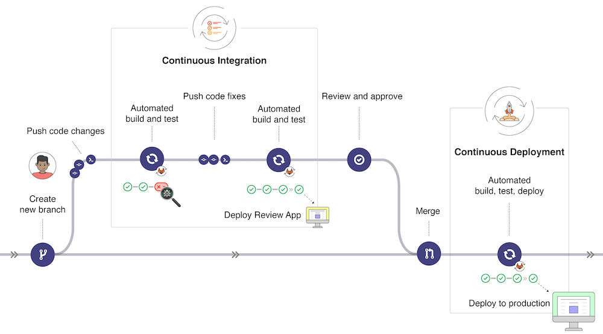
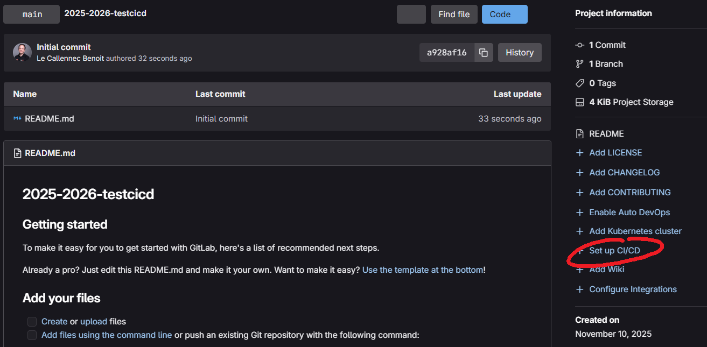
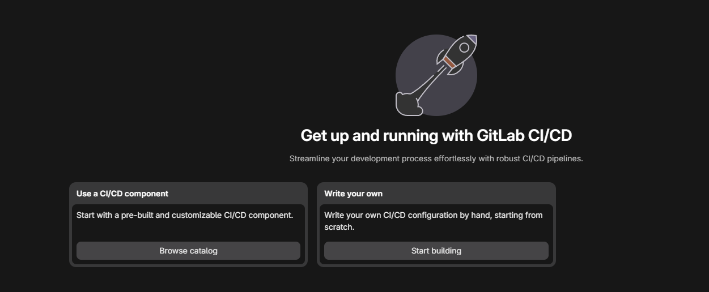
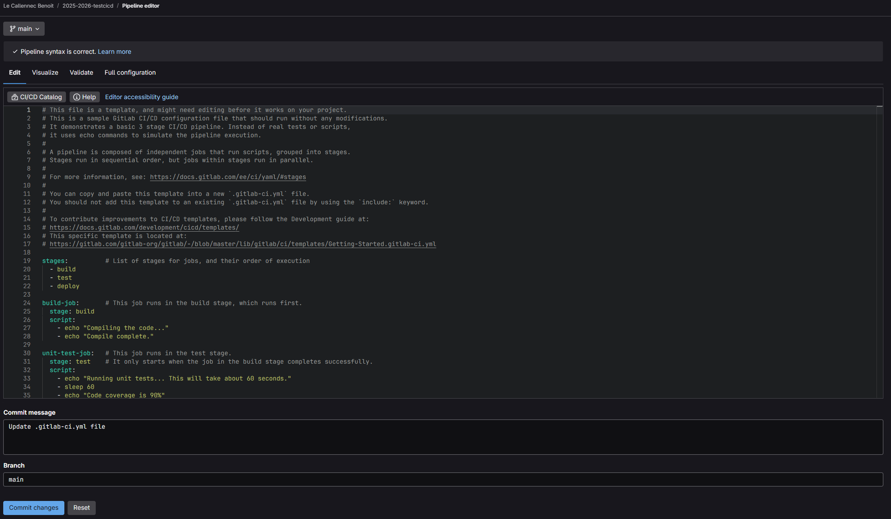
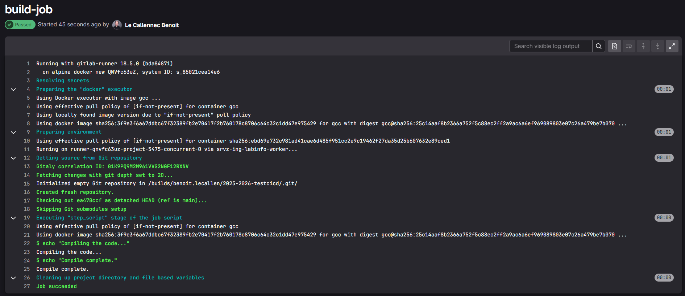

2243.2 Génie Logiciel - 2026-2027
Définitions
Qu'est-ce que l'intégration ?
Quels sont les risques ?
La solution : intégration continue
CI/CD et GitLab
Compiler le tout
Exercice

Image : aws.amazon.com
Fusionner
Lister les étapes depuis le développement jusqu'au déploiement
LOCAL
Code, compile, link, manual tests, unit tests, integration tests, functional tests, commit, rebase-merge, push
REMOTE
Pull, recompile, all tests, installers, sign binaries, install on VMs, all tests, upload installers.
En fonction des technologies utilisées ?
En fonction du temps entre chaque intégration ?
➔ Integration Hell
Intégrer "en continue" ➔ plusieurs fois par jour

Image : gitlab.com




before_script:
- apt-get update --yes
- apt-get install --yes cmake
- apt-get install --yes ninja-build
image: gcc
before_script:
- apt-get update --yes
- apt-get install --yes cmake
- apt-get install --yes ninja-build
stages: # List of stages for jobs, and their order of execution
- build
- test
- deploy
build-job: # This job runs in the build stage, which runs first.
tags:
- alpine-docker
stage: build
script:
- mkdir BUILD
- cd BUILD
- cmake -G "Ninja" ..
- ninja
- ./2243.2_Main
unit-test-job: # This job runs in the test stage.
stage: test # It only starts when the job in the build stage completes successfully.
script:
- echo "Running unit tests... This will take about 60 seconds."
- sleep 60
- echo "Code coverage is 90%"
lint-test-job: # This job also runs in the test stage.
stage: test # It can run at the same time as unit-test-job (in parallel).
script:
- echo "Linting code... This will take about 10 seconds."
- sleep 10
- echo "No lint issues found."
deploy-job: # This job runs in the deploy stage.
stage: deploy # It only runs when *both* jobs in the test stage complete successfully.
environment: production
script:
- echo "Deploying application..."
- echo "Application successfully deployed."
$ mkdir BUILD
$ cd BUILD
$ cmake -G "Ninja" ..
-- The C compiler identification is GNU 15.2.0
-- The CXX compiler identification is GNU 15.2.0
-- Detecting C compiler ABI info
-- Detecting C compiler ABI info - done
-- Check for working C compiler: /usr/bin/cc - skipped
-- Detecting C compile features
-- Detecting C compile features - done
-- Detecting CXX compiler ABI info
-- Detecting CXX compiler ABI info - done
-- Check for working CXX compiler: /usr/local/bin/c++ - skipped
-- Detecting CXX compile features
-- Detecting CXX compile features - done
-- Configuring done (0.6s)
-- Generating done (0.0s)
-- Build files have been written to: /builds/benoit.lecallen/2243.2-gelo1-benoit-le-callennec/BUILD
$ ninja
[1/8] Building CXX object Backend/CMakeFiles/2243.2_Backend.dir/backend.cpp.o
[2/8] Building CXX object CMakeFiles/2243.2_Main.dir/main.cpp.o
[3/8] Building CXX object Middleware/CMakeFiles/2243.2_Middleware.dir/middleware.cpp.o
[4/8] Linking CXX static library Backend/lib2243.2_Backend.a
[5/8] Linking CXX static library Middleware/lib2243.2_Middleware.a
[6/8] Building CXX object GUI/CMakeFiles/2243.2_GUI.dir/gui.cpp.o
[7/8] Linking CXX static library GUI/lib2243.2_GUI.a
[8/8] Linking CXX executable 2243.2_Main
$ ./2243.2_Main
GUI Middleware Backend
Cleaning up project directory and file based variables
Job succeeded
OBJECTIF
Configurer + intégrer Hello_Cmake dans le CICD